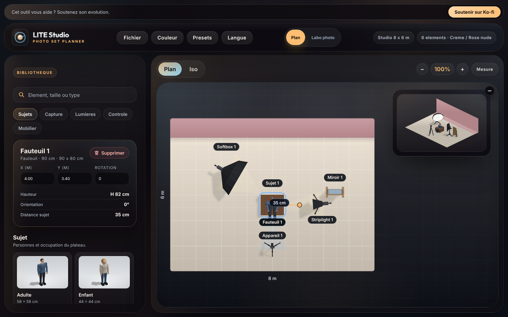

Fotostudio-Plan
So baust du einen Boudoir-Studioplan, der stimmig, elegant und leicht umzusetzen ist.
Ein Boudoir-Setup lebt genauso von der Atmosphäre wie von der Technik. Der Plan sollte Mobiliar, Abstand zum Hintergrund, Kameraposition, Bewegungszonen und die Hauptquelle zeigen, damit das Shooting ruhig und klar ablaufen kann.
Mobiliar sichtbarSessel, Bank oder Spiegel sollten von Anfang an Teil des Plans sein.
Weiches umhüllendes LichtEin großer Lichtformer oder eine parabolische Quelle sorgt oft für ein sanftes und schmeichelndes Ergebnis.
Hintergrund und DekoDie Wahl des Hintergrunds beeinflusst direkt das Gefühl von Intimität, Luxus oder Kontrast.
Respekt für das MotivEin klarer Aufbau reduziert Unsicherheit während der Session.
